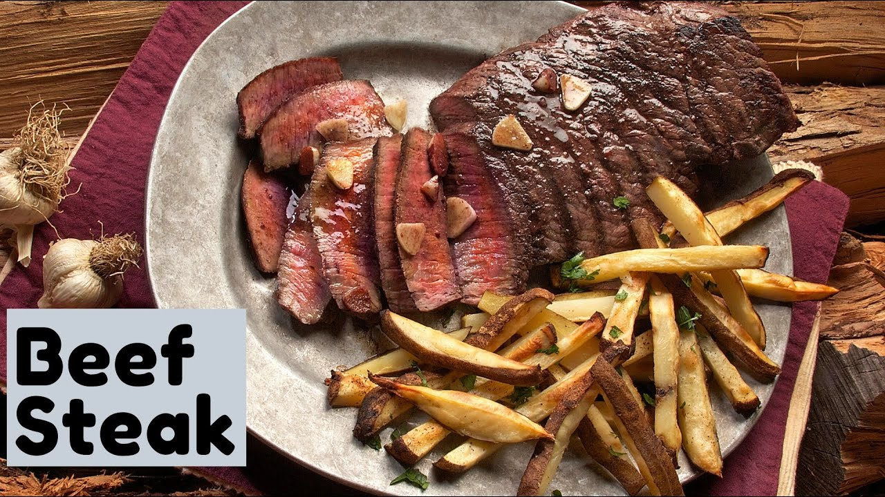

Beef Steak

Description
Steaks are like wine – the more you spend, the better they are. Juicier, more flavour, more tender, no random bits of sinew throughout
And as much as we’d all like to be able to splurge on premium quality beef every time we have a hankering for steak, the reality is that most of us cannot!
But you can turn every day beef steaks into something that tastes as good as a premium cut (in my humble opinion) by using a great beef steak marinade!
Ingredients
- 2 Steaks
- 1 tsp Dijon mustard
- 1/2 tsp minced garlic
- 1/2 tsp onion powder
- 1 tbsp soy sauce
- 1 tbsp oil
- 1 tbsp Worcestershire sauce
- Black pepper
- 1 tbsp balsamic vinegar
Steps
It’s actually easy to make marinades that infuse flavour into steaks. But it’s harder to make marinades that enhance without adding too much flavour into the steak. You want the steak to taste mainly of (gasp, shock horror!) BEEF. Not overwhelmed by marinade flavour!
- Mix together mustard, garlic and onion powder. Then mix in remaining ingredients.
- Place beef in a ziplock bag with Marinade and marinade overnight (12 - 24 hours).
- Remove from the fridge 30 minutes before cooking to bring to room temperature - key for even cooking of steaks. Shake off excess marinade.
- Brush BBQ Grills with oil, then heat on high heat until is really hot - you should see wisps of smoke. Or heat a heavy based skillet on high until very hot, then add oil - it will heat almost instantly.
- Add steaks. For 2cm / 3/4" thick steaks, cook the first side for 2 minutes, then turn and cook the other side for 2 minutes (medium rare 52°C/125°F, chart below for other doneness temps). (Note 3)
- Remove from skillet onto a WARM plate, cover loosely with foil and set aside for 5 minutes.
- Serve !!!